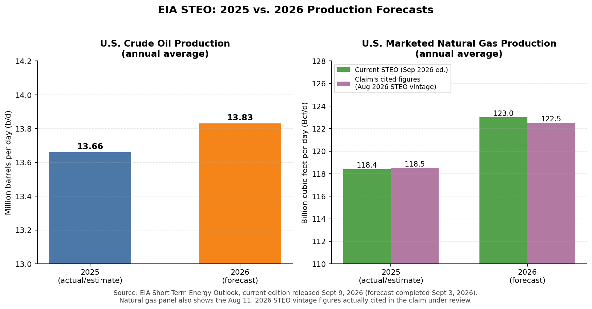

Claim under review (as posed): "The EIA forecasts U.S. crude oil production will average 13.8 million barrels per day (b/d) in 2026, surpassing the previous record of 13.7 million b/d set in 2025, and that marketed natural gas production will average 122.5 billion cubic feet per day (Bcf/d) in 2026, surpassing the previous record of 118.5 Bcf/d set in 2025."
MOSTLY TRUE — crude oil figures current; natural gas figures are one edition stale
The current edition of EIA's Short-Term Energy Outlook (STEO), released September 9, 2026 (forecast completed September 3, 2026 — this is the newest edition available as of the 2026‑09‑26 check date; no October edition has yet been published), confirms the crude oil figures exactly:
| Year | Annual average, million b/d (unrounded) | Rounded (as commonly cited) |
|---|---|---|
| 2025 | 13.66 | 13.7 ✓ matches claim |
| 2026 (forecast) | 13.83 | 13.8 ✓ matches claim |
Source table: STEO PDF, "U.S. total crude oil production," petroleum supply table (p. 37 of steo_full.pdf). 2025 (13.66 million b/d) is indeed higher than every prior year in the STEO history table (e.g., 2024 = 13.27 million b/d), so it is correctly described as the prior record, and 2026's 13.83 million b/d would surpass it. This half of the claim checks out against the live, current-edition data.
This is where the "stale forecast vintage" problem the review was designed to catch actually appears. EIA's own edition-to-edition comparison file (compare.pdf, "Current Forecast: September 9, 2026; Previous Forecast: August 11, 2026") shows:
| Edition | 2025 marketed gas (Bcf/d) | 2026 marketed gas forecast (Bcf/d) |
|---|---|---|
| August 11, 2026 STEO (previous) | 118.4 | 122.5 — matches the number in the claim |
| September 9, 2026 STEO (current) | 118.4 | 123.0 — the actual current figure |
The claim's 2026 figure of 122.5 Bcf/d is not from the live STEO — it is the August 2026 edition's number. The current (September) STEO has revised the 2026 marketed natural gas production forecast up by 0.5 Bcf/d, to 123.0 Bcf/d. The 2025 figure was unchanged at 118.4 Bcf/d in both editions; the claim's "118.5" is a minor rounding mismatch against both editions' 118.4 (not a vintage issue, just imprecise rounding in whatever source produced the claim).
Directionally the claim is still correct — 2026 marketed natural gas production is forecast to set a new record above 2025 — but the specific magnitude cited (122.5 Bcf/d) understates the current outlook and should be updated to 123.0 Bcf/d.
compare.pdf), both dated September 9, 2026 with the previous edition dated August 11, 2026 — they agree with each other.
https://www.eia.gov/outlooks/steo/pdf/steo_full.pdf (petroleum supply table p.37; natural gas supply table p.41; narrative p.8).https://www.eia.gov/outlooks/steo/pdf/compare.pdf ("Current Forecast: September 9, 2026; Previous Forecast: August 11, 2026").https://www.eia.gov/todayinenergy/detail.php?id=68125 (source of the 13.8 / 13.7 crude oil figures, confirmed to match the live STEO).https://www.eia.gov/outlooks/steo/report/petro_prod.php and https://www.eia.gov/outlooks/steo/report/natgas.php.